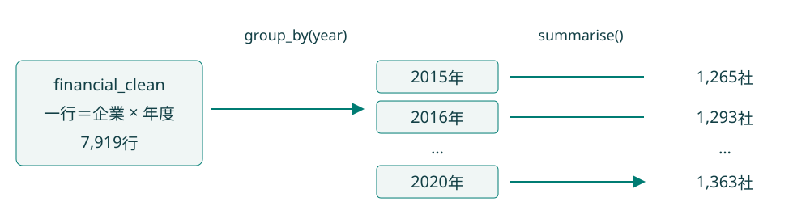
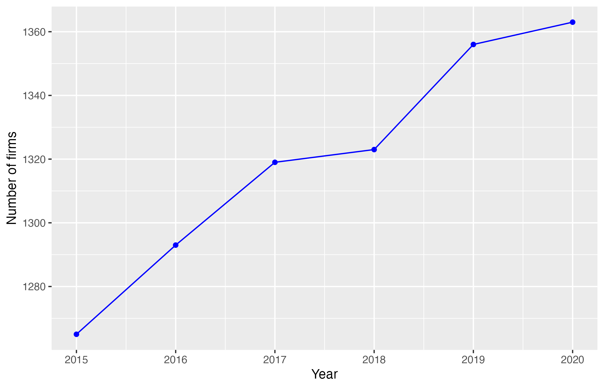
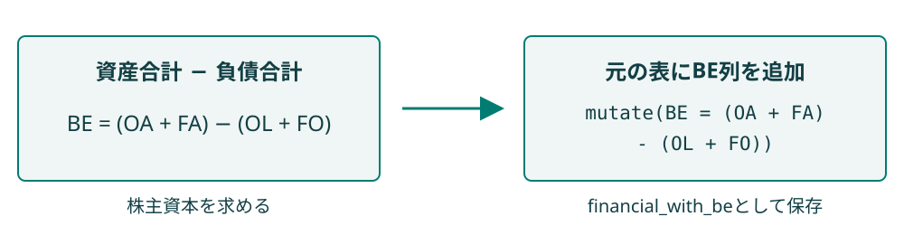
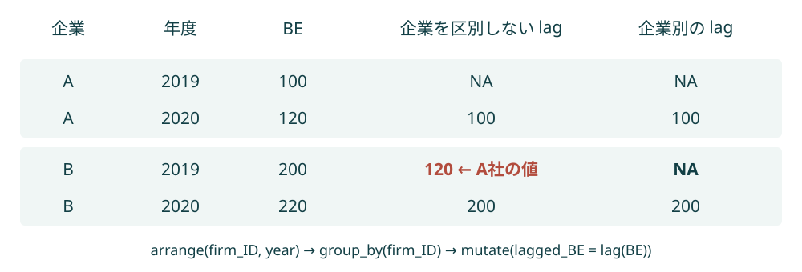
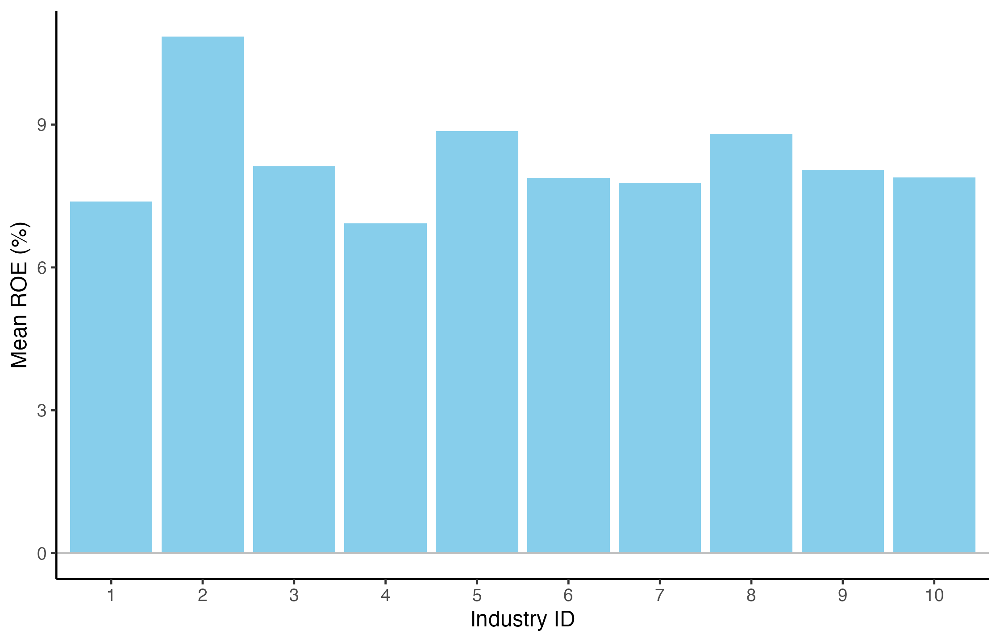
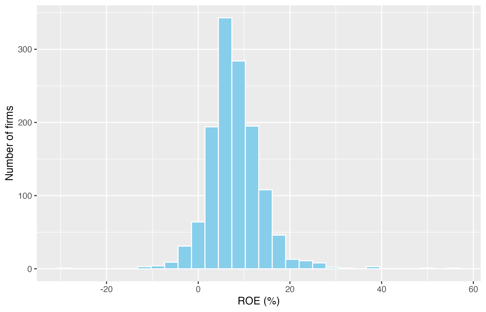

library(tidyverse)第8回：財務データ分析 II
到達目標
- 財務データの集計を通じて、企業や産業の特徴を把握できる。
- ROEの意味を理解し、計算できる。
作業の準備
今回は、第7回でIDをカテゴリ変数に変換し、欠損を含む1行を削除したfinancial_cleanを引き続き使う。
empirical_finance.Rprojを開く。- File → New File → R ScriptからRスクリプトを新規作成し、
script/lesson08.Rとして保存する。すでに作成している場合は、そのファイルを開く。 - 結果の保存先となる
outputフォルダを確認する。前回の処理済みデータを保存していない場合は、再読み込みに使うdata/data_lesson07.csvも用意する。手元にない場合は、data_lesson07.csv をダウンロードし、Project内のdataフォルダに保存する。
前回の処理済みデータを使う場合も、パッケージは改めて読み込む。
第7回のfinancial_cleanがEnvironmentに残っている場合は、そのまま利用する。
前回のデータを保存しておらず、financial_cleanが残っていない場合は、以下のコードでCSVを読み直し、IDの変換と欠損を含む1行の削除を行う。処理済みデータを引き継げた場合、この再読み込みは不要である。
financial_raw <- read_csv(
"data/data_lesson07.csv",
na = c("", "NA"),
show_col_types = FALSE
)
financial_clean <- financial_raw |>
mutate(
firm_ID = as.factor(firm_ID),
industry_ID = as.factor(industry_ID)
) |>
drop_na() # 第7回と同じく、欠損を含む1行を削除するどちらの場合も、次のコードでデータの大きさを確認する。
dim(financial_clean)[1] 7919 11処理済みデータは7,919行・11列となる。
Chapter 1｜年度別の集計と可視化
1. 年度別の企業数の集計
企業の売上高の平均が前年より増えていても、集計対象に大企業が加わっただけかもしれない。まず年度ごとの企業数と売上高の平均値・中央値を求め、比較するデータの範囲と特徴を確かめる。
第7回では、一つの年度に絞って売上高の分布を調べた。今回は、第6回の投資案別集計と同様に、group_by()で集計単位を年度に指定し、summarise()で結果を一行ずつにまとめる。

# 年度別に集計し、1年度につき1行の表を作る
firms_by_year <- financial_clean |>
group_by(year) |>
summarise(
n_firms = n_distinct(firm_ID),
mean_sales = mean(sales),
median_sales = median(sales), # median()で中央値を求める
.groups = "drop" # 集計結果のグループ化を解除する
)
firms_by_year# A tibble: 6 × 4
year n_firms mean_sales median_sales
<dbl> <int> <dbl> <dbl>
1 2015 1265 173615. 42827.
2 2016 1293 173360. 41955.
3 2017 1319 170011. 40748.
4 2018 1323 157995. 38749.
5 2019 1356 160928. 39549.
6 2020 1363 161044. 39457.n_distinct(firm_ID)は企業IDの種類数を数える。n()は行数であり、今回は一社・一年度につき一行なので両者は一致する。.groups = "drop"は集計後のグループ化を解除する指定である。
結果は年度ごとに一行、合計6行となる。2015年の企業数は1,265社、2020年は1,363社である。
2. 企業数の推移の可視化
企業データベースでは、収録対象の追加や企業の退出などによって、分析できる企業数が年度ごとに変わることがある。ここでは企業数を折れ線グラフにし、対象が大きく増減した年度がないかを確認する。
集計表をggplot2へ渡し、年度を横軸、企業数を縦軸として描く。
firms_plot <- ggplot(firms_by_year, aes(x = year, y = n_firms)) +
geom_line(colour = "blue") +
geom_point(colour = "blue") +
labs(x = "Year", y = "Number of firms")
print(firms_plot)
年度によって収録企業数が異なる。売上高の平均値が変化しても、各企業の売上高が変化したとは限らず、集計対象の企業が入れ替わった可能性もある。時点間の比較では、数値の変化と対象の変化を区別する。
Chapter 2｜株主資本とROEの計算
これまでは、読み込んだ財務データの特徴を、集計やグラフを通じて確認してきた。ここからは、複数の財務項目を組み合わせて、新しい分析指標を作成する。ここでは、株主の投資に対する会計上の収益性を表すROEを取り上げる。
1. ROEの意味と定義
利益が100の企業と10の企業があっても、利益額だけでは、株主の資本を効率よく使っているのがどちらかは判断できない。ここでは利益を株主資本の大きさと対応させ、企業規模の異なる企業の収益性を比べる指標であるROEの考え方を学ぶ。
株主から見た投資額と投資の成果
株主資本（BE）は株主の投資額、当期純利益（X）はその投資から得られた当期の成果を表す。投資額と成果を対応させることで、企業規模の異なる企業も比べられる。
ROE（Return on Equity、自己資本利益率）は、株主に帰属する資本に対して、どれだけの当期純利益を生み出したかを表す指標である。
ここでは、期首の株主資本を当期の利益と対応させ、次のように計算する。
\[ ROE_t = \frac{X_t}{BE_{t-1}} \]
\(X_t\)は当期純利益、\(BE_{t-1}\)は期首、すなわち前期末の株主資本である。例えば、期首株主資本が1,000、当期純利益が80なら、ROEは0.08、百分率では8%となる。これは会計上の収益性を表すものであり、株価の上昇率ではない。
ROEを評価する基準：株式資本コスト
ROEの高低を評価する際には、株主が期待するリターン、すなわち企業にとっての株式資本コストとの比較が必要になる。
2014年8月に経済産業省が公表した「伊藤レポート」は、日本企業の持続的な成長に向けて、企業と投資家の望ましい関係を検討した報告書である。投資家から評価されるための第一歩として、企業は最低限8%を上回るROEを目指すべきだと提言した。
ただし、8%を達成すればどの企業でも十分というわけではない。株式資本コストは企業ごとに異なるため、自社の資本コストを上回るROEを目指す必要がある。
2. 株主資本の計算と列の追加
今回のデータには株主資本BEの列がないため、資産合計（OA + FA）から負債合計（OL + FO）を差し引いて求める。OAは事業資産、FAは金融資産、OLは事業負債、FOは金融負債を表す。
\[ BE_t = \underbrace{(OA_t + FA_t)}_{\textcolor{red}{\scriptstyle\text{資産}}} - \underbrace{(OL_t + FO_t)}_{\textcolor{red}{\scriptstyle\text{負債}}} \]
この式を使い、mutate()でBEの列を追加する。

financial_with_be <- financial_clean |>
mutate(BE = (OA + FA) - (OL + FO)) # 資産合計から負債合計を差し引く
financial_with_be |>
select(year, firm_ID, OA, OL, FA, FO, BE) |>
head()# A tibble: 6 × 7
year firm_ID OA OL FA FO BE
<dbl> <fct> <dbl> <dbl> <dbl> <dbl> <dbl>
1 2016 1 13866. 4534. 4642. 3960. 10014.
2 2017 1 13953. 5111. 7744. 6159. 10426.
3 2018 1 18818. 5137. 7285. 10124. 10842.
4 2019 1 18190 5488. 9735. 11362. 11075.
5 2020 1 20463. 5371. 10274. 13772. 11594.
6 2015 2 2978. 1840. 2258. 2341. 1055.mutate()は各行で計算し、年度末の株主資本を新しい列として加える。企業ID 1の2016年末の株主資本は10,013.82となる。
3. 企業別の前期値の取得
ROEの分母に使うのは、期首、すなわち前期末の株主資本\(BE_{t-1}\)である。例えば、2020年のROEには2019年末のBEを使う。先ほど作ったBE列には各年度末の値が入っているため、同じ企業の前年のBEを取り出し、当年の利益と同じ行に並べる操作が必要になる。
dplyrのlag()は、ベクトルを一つ後ろへずらし、各位置に一つ前の値を置く関数である。最初の位置は、前の値がないためNAとなる。
lag(c(100, 120, 150)) # 各位置に一つ前の値を置く。最初の位置はNAになる[1] NA 100 120結果はNA, 100, 120となる。例えば、A社の当期純利益Xと期末株主資本BEが次の値であるとき、lag(BE)を加えると、当年の利益と前年末の株主資本が同じ行にそろう。
| 企業 | 年度 | X：当期純利益 | BE：当期末株主資本 | lag(BE)：前期末株主資本 |
|---|---|---|---|---|
| A | 2019 | 8 | 100 | NA |
| A | 2020 | 10 | 120 | 100 |
| A | 2021 | 18 | 150 | 120 |
Xは当年の行に残したまま、lag()で前年末のBEをその行に並べる。2019年のBE（100）は2020年の行に、2020年のBE（120）は2021年の行に、一行ずつ下へずれて入る。2019年の行は、その前の年のデータがないためNAとなる。
太字の2020年の行では、当年の利益10と前年末のBE 100がそろい、ROEを\(10/100=10\%\)と計算できる。2021年も同じ行の18と120を使い、\(18/120=15\%\)となる。
ただし、lag()は前の行の値を取るだけで、企業の違いを自動的に判別しない。複数の企業が並ぶ表にそのまま適用すると、企業の境目で別の企業の値が入り込んでしまう。

図の「企業を区別しない lag」を見ると、B社の2019年の行に、直前の行にあるA社の2020年のBE（120）が入っている。これはB社自身の前年末の株主資本ではなく、この値でROEを計算すると誤った結果になる。
一方、group_by(firm_ID)で企業別に分けてからlag()を使うと、値の取得は各企業の中だけで行われる。図の右列では、B社の最初の年である2019年は前期値がないためNAとなり、2020年にはB社自身の2019年のBE（200）が正しく入る。
したがって、まずarrange(firm_ID, year)で企業・年度順に並べ、group_by(firm_ID)で企業別に分けてから、前の年度と株主資本を取り出す。
financial_with_lag <- financial_with_be |>
arrange(firm_ID, year) |> # 企業ごとに年度の古い順に並べる
group_by(firm_ID) |> # 別の企業の値が混ざらないよう企業別に処理する
mutate(
previous_year = lag(year), # 前の行の年度を残し、前年かどうかを後で確かめる
lagged_BE = lag(BE) # 同じ企業の前の行から期末株主資本を取り出す
) |>
ungroup() # 前期値を作った後は、企業別のグループ化を解除する
financial_with_lag |>
filter(firm_ID %in% c("1", "2")) |> # %in%で指定した値のいずれかに一致するかを判定する
select(firm_ID, year, BE, previous_year, lagged_BE)# A tibble: 11 × 5
firm_ID year BE previous_year lagged_BE
<fct> <dbl> <dbl> <dbl> <dbl>
1 1 2016 10014. NA NA
2 1 2017 10426. 2016 10014.
3 1 2018 10842. 2017 10426.
4 1 2019 11075. 2018 10842.
5 1 2020 11594. 2019 11075.
6 2 2015 1055. NA NA
7 2 2016 1082. 2015 1055.
8 2 2017 1135. 2016 1082.
9 2 2018 1184. 2017 1135.
10 2 2019 1237. 2018 1184.
11 2 2020 1280. 2019 1237.arrange()は企業内の年度順を整え、group_by()は企業の境界を指定する。ungroup()は、前期値を作った後のグループ化を解除する。各企業の最初の観測では、前期値がNAになる。
lag()が取得するのは「前の行」であり、必ずしも「前年」ではない。例えば2018年の次が2020年なら、その行の前期値は2年前の値になる。previous_yearも残し、ROEを計算する際に年度が連続しているかを判定する。dplyr：lag()
4. ROEの計算
当期純利益Xと前期末株主資本lagged_BEがそろったので、先ほどの式\(ROE_t = X_t / BE_{t-1}\)に従ってROEを計算する。
ここでは、前年の株主資本が確認でき、かつ正である観測を比較対象とする。0の株主資本では割り算ができず、負の株主資本では利益率の通常の解釈が難しくなるためである。
roe_data <- financial_with_lag |>
filter(
year == previous_year + 1, # 前の観測がちょうど前年であることを確認する
!is.na(lagged_BE), # 期首株主資本を取得できた行を残す
lagged_BE > 0 # 分母が0以下の行を除く
) |>
mutate(
ROE = X / lagged_BE, # 当期純利益を同じ企業の期首株主資本で割る
ROE_percent = ROE * 100
)
nrow(financial_with_lag)[1] 7919nrow(roe_data)[1] 6404roe_data |>
select(firm_ID, year, X, lagged_BE, ROE_percent) |>
head()# A tibble: 6 × 5
firm_ID year X lagged_BE ROE_percent
<fct> <dbl> <dbl> <dbl> <dbl>
1 1 2017 662. 10014. 6.61
2 1 2018 665. 10426. 6.38
3 1 2019 660. 10842. 6.09
4 1 2020 844. 11075. 7.62
5 2 2016 49.4 1055. 4.68
6 2 2017 75.9 1082. 7.02filter()は条件がTRUEの行を残す。今回のデータでは、各企業の最初の観測1,515行が対象外となり、6,404行についてROEを計算できる。企業ID 1の2017年のROEは約6.61%である。計算対象外の行も、元のfinancial_with_lagには残っている。
Chapter 3｜ROEの分布と産業内順位
1. 同一年度におけるROEの比較
ある企業のROEが高くても、同じ年の他社も高ければ、その企業だけが好調とは言い切れない。ここでは2020年にそろえてROEの概要と産業別の平均値・中央値を求め、同じ時期の企業や産業の収益性を比べる。
全年度のデータから前期株主資本とROEを計算した後で、比較する年度を絞る。先に2020年だけにしてしまうと、lag()に必要な2019年の値を失う。
roe_2020 <- roe_data |>
filter(year == 2020)
nrow(roe_2020)[1] 1322summary(roe_2020$ROE_percent) Min. 1st Qu. Median Mean 3rd Qu. Max.
-28.657 4.661 7.409 8.018 11.173 56.418 2020年の収録企業は1,363社だが、ROEを計算できるのは1,322社である。この違いは、集計対象の一部について前年の株主資本を取得できないことによる。
産業ごとにROEの平均値と中央値も求める。
roe_by_industry <- roe_2020 |>
group_by(industry_ID) |>
summarise(
n_firms = n_distinct(firm_ID),
mean_ROE = mean(ROE_percent),
median_ROE = median(ROE_percent),
.groups = "drop"
)
roe_by_industry# A tibble: 10 × 4
industry_ID n_firms mean_ROE median_ROE
<fct> <int> <dbl> <dbl>
1 1 187 7.38 7.03
2 2 37 10.8 10.6
3 3 300 8.12 7.42
4 4 27 6.92 6.54
5 5 57 8.86 7.75
6 6 20 7.88 6.98
7 7 225 7.78 6.89
8 8 69 8.80 8.44
9 9 116 8.05 7.71
10 10 284 7.89 7.32ここでの平均値は、各企業のROEを同じ重みで平均した値である。産業全体の利益合計を株主資本合計で割った値とは異なる。
2. 産業別ROE平均値の棒グラフ
産業ごとの収益性の違いを見比べるため、先ほどの集計表を棒グラフにする。横軸に産業ID、縦軸にROEの平均値を取り、どの産業の平均値が高いかを確認する。
industry_roe_plot <- ggplot(roe_by_industry, aes(x = industry_ID, y = mean_ROE)) +
geom_col(fill = "skyblue") + # 計算済みの平均値を棒の高さにする
geom_hline(yintercept = 0, colour = "gray") +
labs(x = "Industry ID", y = "Mean ROE (%)") +
theme_classic()
print(industry_roe_plot)
縦軸の10は平均ROEが10%であることを示す。平均値が高い産業でも、すべての企業のROEが高いとは限らないため、次に個々の企業の分布を確認する。
3. ROEの分布の可視化
ROEの平均値だけでは、多くの企業がその近くに集まっているのか、少数の極端な値に引っ張られているのかは分からない。ここではヒストグラムを描き、企業が集中する水準、赤字企業の存在、極端に高いROEを持つ企業の有無を確認する。
第7回と同じgeom_histogram()を使い、横軸には百分率のROE_percentを指定する。値が10ならROEは10%である。
roe_plot <- ggplot(roe_2020, aes(x = ROE_percent)) +
geom_histogram(bins = 30, fill = "skyblue", colour = "white") +
labs(x = "ROE (%)", y = "Number of firms")
print(roe_plot)
期首株主資本が正の企業を対象としているため、負のROEは当期純損失を示す。一方、高いROEには利益の大きさだけでなく、分母の株主資本の小ささも影響する。極端な値がある場合は、Xとlagged_BEに戻って確かめる。
4. 産業内の順位付け
企業を評価するときには、市場全体での比較に加え、事業の特徴が近い同業他社の中での位置も知りたい。ここでは産業ごとにROEの高い順に順位を付け、収益性が相対的に高い企業を探す。
min_rank()は値に順位を付ける関数である。desc()を組み合わせると、大きい値が1位になる。例えば、値が20, 20, 10なら、順位は1, 1, 3となる。
roe_ranking_2020 <- roe_2020 |>
group_by(industry_ID) |>
# 大きいROEを1位にする。同じ値は同順位になり、次の順位は飛ぶ（例：1, 1, 3）
mutate(roe_rank = min_rank(desc(ROE))) |>
ungroup() |>
arrange(industry_ID, roe_rank) |>
select(industry_ID, firm_ID, X, lagged_BE, ROE_percent, roe_rank)
roe_ranking_2020 |>
filter(roe_rank == 1)# A tibble: 10 × 6
industry_ID firm_ID X lagged_BE ROE_percent roe_rank
<fct> <fct> <dbl> <dbl> <dbl> <int>
1 1 8 2678. 6896. 38.8 1
2 2 242 15299. 40799. 37.5 1
3 3 475 1762. 3542. 49.8 1
4 4 619 7927. 53156. 14.9 1
5 5 661 9490. 35500. 26.7 1
6 6 719 217263. 1527838. 14.2 1
7 7 929 454. 804. 56.4 1
8 8 1042 290. 1132. 25.6 1
9 9 1167 47069. 200614. 23.5 1
10 10 1380 2008. 8039. 25.0 1group_by(industry_ID)を使うため、順位は産業ごとに付く。summarise()と異なり、mutate()は企業ごとの行を残したまま、順位の列を加えている。同じ1位でもROEの水準は産業によって異なるため、順位と元の数値を合わせて読む。
5. 分析結果の保存
企業比較の結果をレポートで示したり、別の年度の結果と見比べたりできるよう、順位表と分布の図をファイルに保存する。表は数値の確認や再利用に、図はROEの分布を伝えるために使う。
順位表はwrite_csv()、分布の図はggsave()でoutputフォルダへ保存する。write_csv()はreadrの関数で、行番号の列を付けずにCSVを書き出す。
write_csv(roe_ranking_2020, "output/roe-ranking-2020.csv")
ggsave(
"output/roe-distribution-2020.png",
plot = roe_plot,
width = 7,
height = 4.5
)同名のファイルは上書きされる。保存した表と図をFilesペインで確認し、script/lesson08.Rも保存する。